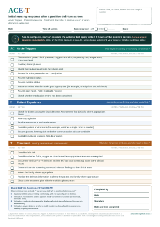
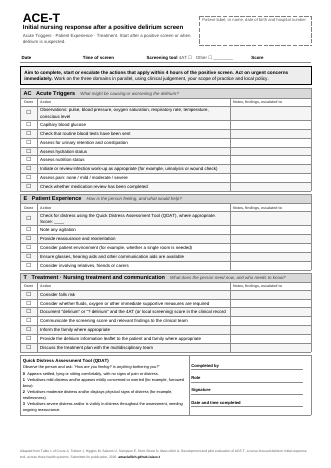
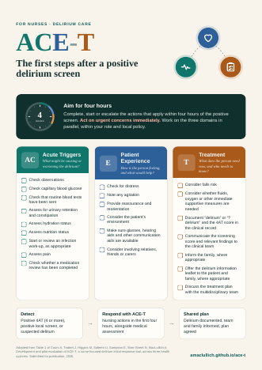

ACE-T bedside form
All 22 prompts with tick boxes and space for notes, the four-hour target, the distress score and a signature block. Ready to print.
Downloads
Print the bedside form for the ward, edit the Word version to match your local wording, or put the poster up where staff will see it.

All 22 prompts with tick boxes and space for notes, the four-hour target, the distress score and a signature block. Ready to print.

The same form as a Word document, in black and white. Change the screening tool, local escalation route or wording to fit your service.

A colour poster of the three domains and the four-hour target, for staff rooms, nursing stations and teaching.
For teaching sessions, or for listening without the animation.
ACE-T supports clinical judgement, local policy and the agreed treatment plan. If you adapt the Word version, keep the three domains and the four-hour target, and check the wording with your local delirium lead or practice educator.
A completed form contains patient information. Store it in line with your organisation’s records policy. This website does not collect any patient data.
{kind=link}